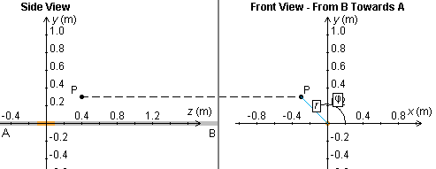
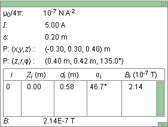

Instructions
This page is designed to get you started using the applet. The applet should be open. The step-by-step instructions on this page are to be done in the applet. You may need to toggle back and forth between instructions and applet if your screen space is limited.
 Field Due To Current In A Short Wire Segment
Field Due To Current In A Short Wire Segment
 Superposition Of Fields Due To Currents In
Several Short Segments Of A Wire
Superposition Of Fields Due To Currents In
Several Short Segments Of A Wire
 Field Due To Current In An Infinite Straight Wire
Field Due To Current In An Infinite Straight Wire

Exercise 1. RESET  the applet.
the applet.
Select the Segments button . Click on the wire in the center of
the window to select the segment at the origin, Segment 0. To
help you in selecting the segment at the origin, display the
Data box  and check the coordinates of the segment you have selected. If
you have selected the wrong segment, deselect it by clicking on
the selected segment and click on another segment.
and check the coordinates of the segment you have selected. If
you have selected the wrong segment, deselect it by clicking on
the selected segment and click on another segment.
You can also check which Segment you have selected by choosing the "Coordinate View" mode by selecting the appropriate radio button . However, segments can only be selected in the "Physical Relative View" mode. Segment 0 is shown in copper color in Figure 1 below.
Choose the "Coordinate View" mode to move the field point P to (x,y,z) = (-0.30, 0.30, 0.40) m, or close to it. To adjust the x and y coordinates, drag P in the right portion of the window. To adjust the z-coordinate, drag P in the left portion of the window. Figure 1 shows how P is situated. The Data box will show the coordinates of P.

Figure 1
Return to the "Physical Reality View" mode and make sure the
Vector button  and the Field Line button
and the Field Line button  are selected. If you set the Scale slider to 1,000 and if
the current is set to 5.00 A, you should see an image like
that in Figure 2 below.
are selected. If you set the Scale slider to 1,000 and if
the current is set to 5.00 A, you should see an image like
that in Figure 2 below.

Figure 2
Exercise 2. Continuing from Exercise 1, display the Data box and drag the box so that all of it can be seen, as in Figure 3 below.

Figure 3
Both the Cartesian and the cylindrical coordinates of the field point P are listed. The definition of these coordinates can be inspected in the Coordinate View mode. See Figure 1 above.
The insert in the Data box has detailed information about the selected segment: its label, i = 0, the location of its center point, Zi = 0, the distance from its center point to the given field point, di = 0.58 m, the angle between the positive x-axis and the line from the center of the segment to the field point, ai = 46.7o, and the magnitude of the magnetic field at the field point due to the segment, Bi = 2.14×10-7 T. To see the angle a0 and the distance d0 illustrated, select the Coordinate View mode and move the mouse pointer onto the selected segment.
Below this insert, the magnitude B of the total magnetic field at the given field point, B = 2.14×10-7 T, is listed. It has the same value as the field vector due to Segment 0 in this case, because only this one segment is selected.
The segment width s is listed in the third line of the Data box. Each segment is 0.20 m wide. E.g., Segment 0 has its center is at Zi = 0 and therefore extends from z = -0.10 m to z = 0.10 m.
Exercise 3. Continuing from Exercise 2, without making any other changes in the applet's settings, vary the current I by means of the slider. As I increases, the length of the blue arrow representing the field vector at P should increase. Also choose some negative values for I. The blue arrows in both the Side View and Front View should reverse direction.
Change the current direction definition from "conventional" to
"electron" by using the Current Drop-Down menu . Note that the arrows on the wire indicating
current direction reverse, but that the field vector does not
reverse direction. Changing the definition of current direction
has no effect on physical reality. You may want to click the
Play button  to animate the current direction indication.
to animate the current direction indication.
Exercise 4. Continuing from Exercise 3, click on the field point and drag it along a horizontal line parallel to the z-axis at y = 0.30 m. To do so, drag the field point in the left portion (Side View) of the applet window. Observe changes in the field vector, by observing the blue arrows and the values in the Data box. Only the magnitude of the field vector should be changing, not its direction. The magnitude should be largest when the field point is closest to the center of the segment, i.e., when the z-coordinate of the point is equal to 0.
In the right portion of the applet window, drag the x,y projection of the field point, and observe changes in the direction and magnitude of the field vector. The direction should always be tangential to the circular magnetic field line centered on the wire, i.e., at right angles to the radius of this circle. The magnitude should increase as the distance r of the field point from the wire decreases, and vice versa.

Exercise 1. RESET the applet.
Select the Segments button . Select two Segments, Segment 0 at the origin and Segment 5 centered at z = 1.00 m.
Choose the "Coordinate View" mode to move the field point P to (x,y,z) = (-0.30, 0.30, 0.40) m, or close to it, as in Exercise 1 of the preceding section. Switching back to the Physical Reality View mode, you should see a display like that when only Segment 0 is selected. That image is reproduced once more as Figure 4 below.
Figure 4
The only difference is that this time the blue arrows are a bit longer. To observe the contribution of Segment 5 to the total field at P, click on Segment 5 to deselect it, then click on it once more to select it again.
Drag the field point parallel to the z-axis, and observe the changes in the field vector as point P moves past the two selected segments.
Exercise 2. Get the numerical values of the magnitudes of the two field vectors due to Segments 0 and 5 from the Data box. Do they add up to the total magnitude B of the field vector listed at the bottom of the Data box? Note that it is permissible in this case to add the magnitudes of the individual vectors because the field vectors due to all segments point in the same direction.
Exercise 1. RESET the applet. The Segments button should
not be selected. In this case, the applet calculates and displays
the total magnetic field due to current in the entire infinite
wire, extending beyond the applet window on either side.
Display the Data box, and record the value of the magnitude of the total magnetic field due to the infinite line current. Then select the Segments button , and select all segments available in the window by clicking on the left-most segment and dragging with the mouse from the left to the right over all segments. The entire wire should be highlighted in copper color. Record the value of the magnitude of the total magnetic field now shown in the Data box. It should be close to, but not exactly equal to that for the infinite wire because when the Segments button is selected the applet calculates the contributions to the magnetic field only from the current in the selected segments within the applet window, not from the current in the entire infinite wire.
Move the field point horizontally (parallel to the z-axis) while the Segments button is selected, and observe how the resultant field vector changes in magnitude. Then deselect the Segments button, and observe how the resultant field vector keeps its magnitude no matter where the field point is located, as long as the field point is moved at a fixed distance from the wire.